Name: Math 243: Calculus C
Exam 2 Solution Guide
28 March 2002
My mind rebels at stagnation. Give me problems, give me work ... and I
am in my own proper atmosphere.
-Sherlock Holmes from The Sign of the Four by A. C. Doyle.
Instructions: Show all work to receive full or partial credit. You may use a scientific calculator on this exam. All University rules and guidelines for student conduct are applicable.
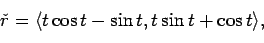
This problem involves a straightforward computation of the arclength
of a parametric curve. We know that
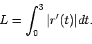
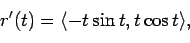
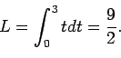
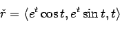
There are several ways to compute  , but since we are given the
parametric curve, the most direct is by computing
, but since we are given the
parametric curve, the most direct is by computing
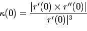
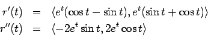
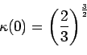
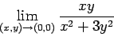
We seek to find two (or more) paths, r1 and r2, which pass through the origin at t=0 such that
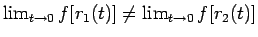
. There are many ways to do this. One example would be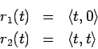
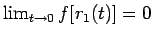
. In the second case,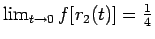
.
To find the equation of the tangent place, we first find the gradient
because we know that
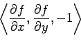
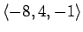
is normal to the tangent plane. Using the standard form for a plane knowing a normal vector and a point on the plane
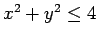
.
To solve this problem, you must find the critical points in the
interior and also check the boundary using Lagrange multipliers or
some other technique. Since
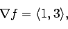
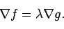
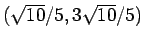
and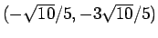
. The former corresponds to a maximum at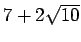
and the latter corresponds to the minimum at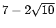
.
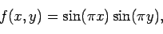
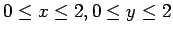
. Sketch a contour plot of f(x,y).
This one looks harder than it is. You must check the interior and
the boundary. However, if you look at f, you can see that
f(x,y)=0 on the boundary. Now, we only need to check the interior
for critical points.
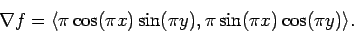
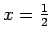
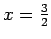
or y = 1. Remember, we are only interested in the interior of the domain, so we do not think about y=0 or y=2, or many other possibilities for x and y that are completely outside the domain. However, notice also that if than y must be either or to force the second component of the gradient to be zero. Below, I will tabulate all the interior critical points together with D and the points' classification. As usual, we can distinguish between a max and a min by checking the second derivative in either the x or y direction.| Point | D | Type |
|
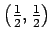 |
1 | max |
|
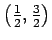 |
1 | min |
|
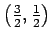 |
1 | min |
|
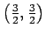 |
1 | max |
|
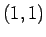 |
-1 | saddle |
A rough sketch might look like
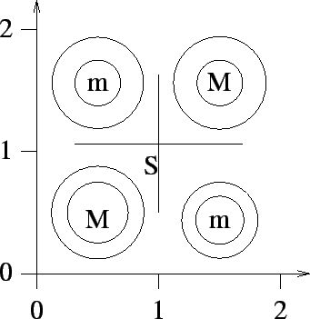